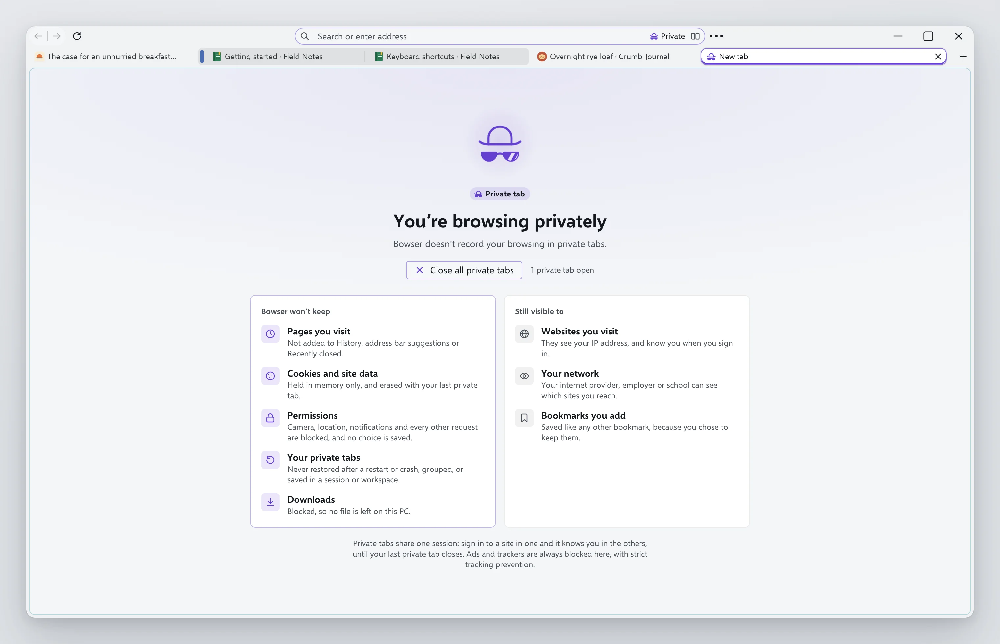
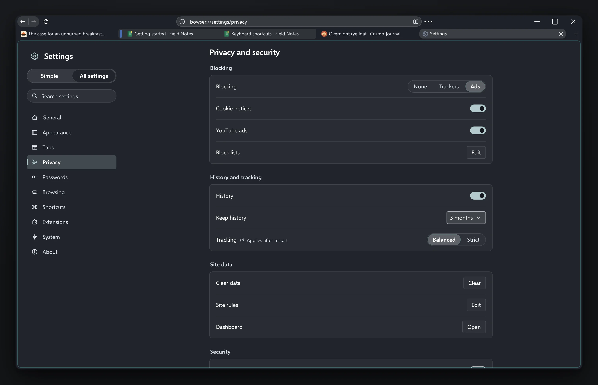

Privacy
What Bowser blocks, what it keeps on your PC, and exactly what it sends, and to whom.
Ads and trackers, blocked
Bowser's blocker stops ads and trackers before they reach the page. It is on from the first launch, and it is the same code you can read on GitHub.


- On from the first launch. There is nothing to install or set up.
- A switch per site. Open Site information from the padlock and turn blocking off for one site. Every other site stays blocked.
- Your own list, if you want one. Put a filters.txt in your Bowser profile and it becomes your list.
- No lists fetched behind your back. Bowser never downloads filter lists by itself, so what it blocks is what you can read.
Private tabs keep nothing
Open one with CtrlShiftP. It sits with your other tabs, and leaves no trace when it closes.


Never kept
- Pages you visit, in history or address-bar suggestions
- Cookies, site data and cache, which live in memory until the last private tab closes
- Private tabs in restored sessions, workspaces or tab islands
- Permissions: every request from a private tab is blocked
- Blocked-request counts in the Privacy dashboard
Always on
- The ad and tracker blocker, whatever the site switch says
- Strict tracking prevention
- A bookmark is the one thing kept, and only when you add it
Private tabs stop Bowser keeping a record on your PC. They don't hide you from the sites you visit, your network or your employer.
Permissions start at no
Bowser never asks. Camera, microphone, location, notifications and pop-ups stay blocked until you allow a site from Site information.


Everything Bowser sends
Bowser has no servers, no account and no telemetry. These are the only places your browser talks to, and why.
| Who | What they receive | When |
|---|---|---|
| The sites you visit | Ordinary page requests, minus the ads and trackers Bowser blocks | When you open a page |
| Your search engine | What you search for | When you press Enter on a search |
| Your search engine's suggestion service | What you type in the address bar | Only if you turn on search suggestions. Never from a private tab |
| Google Translate | The text of the page | Only when you translate. A private tab asks first, every time |
| Microsoft Defender SmartScreen | Addresses you visit, to check them against known bad sites | Where Windows has it switched on |
| GitHub | A request for the current stable version | About a minute after Bowser starts, then at most once an hour. Turn it off in Settings, Updates |
| Bowser | Nothing | Never |
What stays on your PC
Your history, bookmarks, settings, notes, sessions and passwords live in %LOCALAPPDATA%\Bowser, one folder per profile.
- Passwords are encrypted with Windows' own data protection for your user account.
- Clear what you like from the Privacy dashboard: cookies and site data, cache or history, for a time range you pick. Press CtrlShiftDel.
- History can be off for a whole profile.